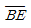
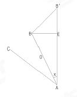
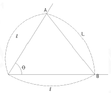
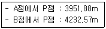
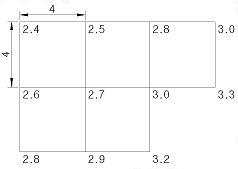
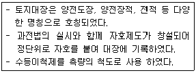

지적기사 (2010-05-09 기출문제)
1과목: 지적측량
1. 경위의 측량방법에 따른 세부측량에서 연직각의 관측은 정반으로 1회측정하여 그 교차가 최대 얼마 이내인 경우 그 평균치를 연직각으로 하는 가?
- 1초
- 5초
- 1분
- 5분
(정답률: 38%)

2. 거리를 측정 할 때 정오차가 발생 할 수 있는 원인으로 거리가 먼 것은?
- 온도보정을 하지 않은 때
- 장력보정을 하지 않은 때
- 처짐보정을 하지 않은 때
- 표고보정을 하지 않은 때
(정답률: 25%)
3. 다음 중 지적삼각점의 제도방법으로 옳은 것은?
- 직경 1mm, 2mm, 3mm의 3중원으로 제도한다.
- 직경 1mm, 2mm의 2중원으로 제도 한다.
- 직경 2mm, 3mm의 2중원으로 제도 한다.
- 직경 3mm의 원 안에 십자선을 표시하여 제도 한다.
(정답률: 54%)
4. 지적기준점표지의 점간거리 기준에 적합하지 않은 것은?
- 교회법에 따른 지적삼각보조점표지의 점간거리를 평균 2km로 하였다.
- 지적삼각점표지의 점간거리를 평균 4km로 하였다.
- 지적위성기준점의 점간거리를 평균 10km로 하였다.
- 다각망도선법에 따른 지적도근점표지의 점간거리를 평균 400m로 하였다.
(정답률: 39%)
5. 경위의 측량방법에 따른 교회법으로 지적삼각보조점측량을 하는 기준에 관한 설명으로 옳지 않은 것은?
- 관측은 20초독이상의 경위의를 사용한다.
- 수평각관측은 2대회의 방향관측법에 따른다.
- 2개의 삼각형으로부터 계산한 위치의 연결교차가 0.50m이하인 때에 그 평균치를 지적삼각보조점의 위치로 결정한다.
- 삼각형의 각 내각은 30°이상 120°이하로 한다.
(정답률: 31%)
6. 평판측량방법에 따른 세부측량을 교회법으로 하여 시오삼각형이 생긴 경우 내접원의 반지름이 최대 얼마 이하일 때 에는 그 중심을 점의 위치로 하는가?
- 0.5mm 이하
- 1mm 이하
- 1.5mm 이하
- 2mm 이하
(정답률: 36%)
7. ∠CAB를 측정함에 있어, B점의 중심을 시준하지 못하여 B'점을 시준 한 때에 수평각 점표귀심을 계산하기 위한 기준점의 편심관측 보정량(X)은?(단

=1.5m, D=2km)
- 1′10″
- 2′35″
- 3′58″
- 4′40″
(정답률: 54%)
8. 평판측량방법에 따른 세부측량을 시행하는 경우 기지점을 기준으로 하여 지상경계선과 도상경계선의 부합여부를 확인하는 방법에 해당하지 않는 것은?
- 현행법
- 도상원호교회법
- 거리비교확인법
- 방사법
(정답률: 30%)
9. 다음 중 임야도를 갖춰 두는 지역의 세부측량에 있어서 지적측량기준점에 따라 측량하지 아니하고 지적도의 축척으로 측량 후 그 성과에 의하여 임야측량결과도를 작성 할 수 있는 경우는?
- 임야도에 도곽선이 없는 경우
- 경계점의 좌표를 구할 수 없는 경우
- 지적도근점이 설치되어 있지 않은 경우
- 지적도에 기지점은 없지만 지적도를 갖춰두는 지역에 인접한 경우
(정답률: 14%)
10. 지적도근점측량에서 사용할 수 있는 수평각관측방법으로 나열된 것은?
- 도선법, 방향관측법
- 다각법, 비례법
- 배각법, 방위각법
- 도선법, 방사법
(정답률: 36%)
11. 다음 중 세부측량을 하는 경우 필지마다 면적을 측정하여야 하는 경우가 아닌 것은?
- 신규등록
- 분할
- 등록전환
- 합병
(정답률: 58%)
12. 다음 그림에서 전제장(ℓ)의 길이는 얼마인가?(단, θ=68°50′20″, L=10m 이다.)

- 5.361m
- 6.061m
- 7.291m
- 8.846m
(정답률: 44%)
13. 경위의 측량법에 따라 지적삼각점의 관측과 계산의 방법 및 기준에 대한 설명으로 옳지 않은 것은?
- 관측은 10초독이상의 경위의를 사용한다.
- 수평각 관측은 3대회의 방향관측법에 따른다.
- 수평각의 측각공차에서 1방향각의 공차는 40초 이내로 한다.
- 수평각의 측각공차에서 1측회의 폐색공차는 ±30초 이내로 한다.
(정답률: 50%)
14. 평팥측량방법으로 세부측량을 한 경우, 측량대상토지의 경계점간 실측거리가 40m이었다면 경계점의 좌표에 따라 계산한 거리와의 교차는 얼마이내이어야 하는가?
- 3cm 이내
- 5cm 이내
- 7cm 이내
- 10cm 이내
(정답률: 19%)
15. 지적삼각점측량에서 A, B en 기지점으로부터 동일한 소구점 P까지의 평면거리가 다음과 같을 때, P점의 표고를 계산한 교차가 얼마 이내이어야 하는가?

- 30.9cm
- 35.9cm
- 40.9cm
- 45.9cm
(정답률: 12%)
16. 축척 1/1,000인 지적도 시행지역에서 평판측량방법에 따른 세부측량을 시행하는 경우 도상에 영향을 미치지 아니하는 지상거리의 허용범위는 얼마인가?
- 10cm
- 20cm
- 30cm
- 40cm
(정답률: 32%)
17. 다음 중 지적측량에 사용되는 구소삼각지역의 직각좌표계원점에 해당하지 않는 것은?
- 계양원점
- 칠곡원점
- 현창원점
- 소라원점
(정답률: 54%)
18. 수평각을 관측하는 경우 망원경을 정반으로 하여 측정하는 가장 큰 목적은 무엇인가?
- 관측오차를 발견하기 위하여
- 외심오차를 발견하기 위하여
- 기계조정에 의한 오차를 소거하기 위하여
- 망원경이 회전하기 때문에
(정답률: 50%)
19. 다음 중 지적측량성과와 검사성과의 연결교차의 허용범위 기준이 옳지 않은 것은?
- 지적삼각점 : 0.20m 이내
- 지적삼각보조점 : 0.25m 이내
- 경계점좌표등록부 시행지역의 지적도근점 : 0.25m 이내
- 경계점좌표등록부 시행지역의 경계점 : 0.10m 이내
(정답률: 54%)
20. 전파기 측량 방법에 따라 다가망도선법으로 지적삼각보조점측량을 하는 때의 기준으로 옳은 것은?
- 3개이상의 기지점을 포함한 폐합다각방식에 의한다.
- 1도선의 점의 수는 기지점을 제외하고 5개 이하로 한다.
- 1도선의 거리는 4km 이하로 한다.
- 1도선은 기지점과 기지점, 교점과 교점간의 거리다.
(정답률: 40%)
2과목: 응용측량
21. 사진측량의 해석방법 중 정량적 해석네 해당되는 것은?
- 환경 및 자원조사
- 대기 및 수질오염조사
- 지질 및 토지이용조사
- 지형지물의 위치 및 크기조사
(정답률: 50%)
22. 그림에서 교점의 수치가 지반고를 표시할 때 토량은 얼마인가?(단, 지반고의 단위 : m)

- 168.6m3
- 184.2m3
- 204.8m3
- 224.4m3
(정답률: 7%)
23. 초점거리 150mm, 축척 10,000으로 촬영한 연직사진에서 종중복도 50%, 사진의 크기 23cm×23cm일 때 기선고도비는?
- 0.667
- 0.678
- 0.767
- 0.797
(정답률: 20%)
24. 완화곡선의 성징을 설명한 것으로 옳지 않은 것은? (정확한 보기내용을 아시는분께서는 오류 신고를 통하여 보기 내용 작성 부탁드립니다. 문제 오류로 정답은 2번입니다.)
- 곡선의 반지름은 완화곡선의 시점점에서 무한대, 종점에서 완화 곡선의 반지름이 된다.
- 완화 곡선의 접선은 시점에서 원호에, 종점에서 직선에 접한다.
- 종점에 있는 캔트는 완화곡선의 캔트와 같다.
- 복원중
(정답률: 42%)
25. 지표면상에 설치한 중심선을 기준으로 터널을 굴착할 때 진행방향으로 갱내의 중심선을 결정하는 작업은?
- 답사
- 예측
- 지표설치
- 지하설치
(정답률: 8%)
26. 지하시설물 측량방법에서 원래 누수를 찾기 위한 기술로 수도관로 중 PVC 또는 플라스틱관을 찾는데 이용되는 관측방법은?
- 전기관측법
- 지장관측법
- 음파관측법
- 자지관측법
(정답률: 39%)
27. 레벨의 중심에서 100m떨어진 곳에서 표척을 세워 1.921m를 관측하고 기포가 4눈금 이동 후에 1.995m를 관측하였다면 이 기포관의 1눈금 이동에 대한 경사각(감도)은?
- 약 40″
- 약 30″
- 약 20″
- 약 10″
(정답률: 12%)
28. 짧은 선의 간격, 굵기, 길이 및 방향 등으로 지표의 기복을 나타내는 것으로 우모법이라고도 하는 지형표시방법은?
- 점고법
- 등고선법
- 영선법
- 채색법
(정답률: 46%)
29. 지형도를 표시하는 주곡선의 기호로 옳은 것은?
- 굵은 실선
- 가는 실성
- 가는 파선
- 가는 점선
(정답률: 30%)
30. 축척 1:3,000의 지형도 편찬을 하는데 축척 1:500 지형도를 이용하였다면 1:3,000지형도의 1도면에 1:500지형도가 몇 매 필요한가?
- 36매
- 25매
- 6매
- 5매
(정답률: 36%)
31. 곡선반지름이 150m인 원곡선의 현의 길이 60m에 대한 중앙종거는?
- 1.5m
- 2m
- 2.5m
- 3m
(정답률: 20%)
32. SPOT 위성에 대한 설명으로 옳은 것은?
- 미국 NASA에서 발사한 자원탐사위성이다.
- HRV는 흑백영상과 다중파장대 영상을 탐측한다.
- 입체시는 불가능 하지만, 특성해석에는 적합하다.
- LANDSAT과는 달리 경사관측이 불가능 하다.
(정답률: 22%)
33. 공선조건식을 이용하는 해석적 3차원 항공섬걱측량방법은?
- 에어폴리곤법
- 스트립 및 븍럭조정법
- 독립모델법
- 번들조정법
(정답률: 29%)
34. 곡선반지름이 100m인 원곡선을 편각법에 의하여 설치할 때 노선의 중심말똑 간격을 40m라 하면 이에 대한 편각은?
- 5°44′
- 10°20′
- 11°28′
- 13°44′
(정답률: 50%)
35. 다음 중 수동적 센서방식이 아닌 것은?
- 사진방식
- 선주사방식
- Laser방식
- Vidicon방식
(정답률: 50%)
36. 클로소이드의 형식 중 반향곡선 사이에 2개의 클로소이드를 삽입하는 것은?
- 복합형
- S형
- 철형
- 난형
(정답률: 57%)
37. 촬영고도가 760m, 사진주점기성장이 110mm일 때 지상의 비고는?(단, 시차차는 1.02mm이다.)
- 7.01m
- 7.⑤m
- 7.12m
- 7.60m
(정답률: 47%)
38. 일반적인 측량방법과 비교할 때 사진측량의 장점에 대한 설명으로 옳지 않은 것은?
- 축적변경이 용이 하다.
- 초기의 시설 및 장비비용이 적게 든다.
- 동체측정에 의한 기록보존이 용이 하다.
- 정량적 및 정성적 측량이 가능하다.
(정답률: 45%)
39. 경사터널내에서 천정에 있는 A, B점을 관측한 결과로 A점의 좌표는 (2375.00m, 3763.00m)이고, B점의 좌표는(2781.00m, 3542.00m)이며, A점의 지반고 982m, B점의 지반고 1127m를 얻었다. 두점의 경사도는?
- 7°34′20″
- 11°22′46″
- 17°24′56″
- 28°33′40″
(정답률: 7%)
40. 상호표정의 인자 중 촬영방향(x-축)을 회전축으로 한 회전운동 인자는?
- φ
- ω
- κ
- by
(정답률: 40%)
3과목: 토지정보체계론
41. 다음 중 데이터베이스 관리 시스템(DBMS)의 기본기능레 해당하지 않는 것은?
- 정의기능
- 분석기능
- 제어기능
- 조작기능
(정답률: 48%)
42. 다음 중 데이터 입력오차가 발생하는 이유로 옳지 않은 것은?
- 작업자의 실수
- PC에 저장된 파일의 빈번한 복사
- 스캐닝할 도면의 신축
- 스캐너의 해상도 문제
(정답률: 28%)
43. 다음 중 토지정보시스템의 원활한 자료교환을 위한 표준화 범위에 해당하지 않는 내용은?
- 데이터 질의 표준화
- 위치좌표의 표준화
- 데이터가격의 표준화
- 메타데이터의 표준화
(정답률: 40%)
44. 다음 중 지적도 전산화 작업의 목적으로 옳지 않은 것은?
- 지적도의 대량 생산 및 배포
- 대민서비스의 질적 수준 향상
- 정확한 지적측량자료의 이용
- 지적도 원형보관 관리의 어려움해소
(정답률: 54%)
45. 다음 중 래스터 자료의 압축방법에 해당하지 않는 것은?
- 블록 코드(Block Code)기법
- 체인 코드(Chain Code)기법
- 연속분할 코드(Run-Length Code)기법
- 포인트 코드(Point Code)기법
(정답률: 43%)
46. 다음 중 토지정보체계에 대한 설명으로 옳지 않은 것은?
- 토지정보체계는 토지에 대한 정보를 제공함으로써 토지관리를 지원한다.
- 토지정보체계의 유용성은 토지자료의 유연성과 획일성에 중점을 두고 있다.
- 토지정보체계의 운영은 자료의 수집 및 자료의 처리ㆍ검색ㆍ분석ㆍ보급 등도 포함한다.
- 토지정보체계는 토지이용계획, 토지관계 정책자료등에 다목적으로 활용이 가능하다.
(정답률: 36%)
47. GIS의 자료 분석 과정 중, 도형자료와 속성자료가 구축된 레이어 간의 정보를 합성하거나 수확적 변환기능을 이용하여 정보를 통합하는 분석방법은?
- 중첩분석
- 표면분석
- 합성분석
- 검색분석
(정답률: 58%)
48. 다음 중 벡터구조와 격자구조를 비교하여 설명한 것으로 옳지 않은 것은?
- 벡터구조는 격자구조에 비해 자료의 양이 적다.
- 격자구조는 정확조가 높고 위상관계를 가지고 있다.
- 벡터구조는 자료구조가 복잡하다.
- 격자구조는 중첩 분석이나 모델링이 용이하다.
(정답률: 44%)
49. 다음 중 지적재조사 사업의 필요성으로 옳지 않은 것은?
- 지적불부합지의 과다
- 경계복원능력의 향상
- 노후화된 지적도면
- 지적관리 인력 확장
(정답률: 62%)
50. 다음 중 다목적지적의 특징에 대한 설명으로 옳지 않은 것은?
- 다양한 일필지의 정보를 기록ㆍ유지ㆍ관리하고 제공하기 위한 시스템이다.
- 물리적 형상의 위치를 보여주는 도형정보와 토지표시사항을 알 수 있는 속성정보로 구성되어 있다.
- 토지에 관한 종합적인 정보를 필지별로 지속적으로 지원하게 되는 시스템이다.
- 종래의 제한적 방식을 이용하여 토지의 위치 정보를 단순하게 정리한 토지정보체계이다.
(정답률: 42%)
51. 다음 중 사용자권한 등록파일에 등록하는 사용자의 비밀번호 설정기준으로 옳은 것은?
- 영문을 포함하여 3자리부터 12자리까지의 범위에서 사용자가 정하여 사용한다.
- 4자리에서 12자리까지의 범위에서 사용자가 정하여 사용한다.
- 영문을 포함하여 5자리부터 16자리까지의 범위에서 사용자가 정하여 사용한다.
- 6자리에서 16자리까지의 범위에서 사용자가 정하여 사용한다.
(정답률: 47%)
52. 디지타이저를 이용하여 도면을 독취할 때에 교차점에 두 개의 선분이 만나는 과정에서 잘못된 좌표가 입력되어 발생하는 오차는?
- 오버슈트(overshoot)
- 스파이크(spike)
- 슬리버(sliver)
- 중복(over lapping)
(정답률: 29%)
53. 다음 중 지형 및 공간과 관련된 모든종류의 공간자료들을 서로 호환이 가능하도록 하기위하여 만들어진 대표적인 교환표준은?
- SPPS
- SDTS
- GIST
- NIST
(정답률: 47%)
54. 다음 중 스캐닝 방식에 의한 공간데이터의 취득에 대한 설명으로 옳지 않은 것은?
- 손상된 도면을 입력하기에 적합하다.
- 입력도면의 평탄성오차가 발생한다.
- 복잡한 도면을 입력할 경우 작업시간이 단축된다.
- 지적도의 경계선 인식이 가능하다.
(정답률: 36%)
55. 다음 중 위상(topology)모형에 대한 설명으로 옳지 않은 것은?
- 인접 다각형을 나나내기 위해서는 경계선을 두 번씩 저장하여야 하는 단점이 있다.
- 복잡한 자료구조의 표현과 실세계의 묘사가 가능하다.
- 인접성 및 연결성 분석과 같은 공간분석이 기능하다.
- 폴리곤으로 나타난 갹체가 위상구조를 갖게 되면 폴리곤구조는 형상(shape), 인접성(neighborhood), 계급성(hierarchy)의 특성을 지닌다.
(정답률: 38%)
56. 다음 중 PBLIS의 개발 목적으로 옳지 않은 것은?
- 행정처리 단계 축소 및 비용 절감
- 지적정보 및 부가정보의 효율적 통합 관리
- 지적재조사 사업의 기반확보
- 대장과 도면정보의 시스템 분리 운영
(정답률: 42%)
57. ISO 19113(지리정보 - 품질원칙)의 품질개요요소에 해당하지 않는 것은?(단, KS X ISO 19113:2007을 기준으로 함)
- 목적
- 완전성
- 연혁
- 처리시간
(정답률: 32%)
58. 다음 중 토지정보시스템의 구성요소에 해당하지 않는 것은?
- 조작과 인력
- 자료
- 소프트웨어
- 처리시간
(정답률: 39%)
59. 다음 중 계급형(hierarchical) 데이터베이스 모형에 관한 설명으로 옳지 않은 것은?
- 이해와 갱신이 용이 하다.
- 모든 레코드는 일 대 일(1:1) 혹은 일 대 다수(1:n)의 관계를 갖는다.
- 가각의 객체는 여러개의 부모레코드를 갖는다.
- 키필드가 아닌 필드에서 검색이 불가능 하다.
(정답률: 24%)
60. 다음 중 TIGER파일의 도형자료를 수치지도 데이터 베이스로 구축한 국가는?
- 미국
- 한국
- 호주
- 캐나다
(정답률: 42%)
4과목: 지적학
61. 다음 중 지번의 역할과 가장 거리가 먼 것은?
- 토지의 위치 추측
- 물권객체의 구분
- 등록 공시 단위의 표상
- 토지규모의 축소
(정답률: 47%)
62. 다음 중 지권(地券)을 발행한 이유로 가장 적합한 것은?
- 토지소유권의 보호
- 토지거래 문란의 방지
- 토지등급의 설정
- 관의 공적 소유권 보장
(정답률: 40%)
63. 다음 중 토지대장의 일반적인 편성 방법이 아닌 것은?
- 물적 편성주의
- 인적편성주의
- 연대적편성주의
- 구역별편성주의
(정답률: 43%)
64. 토지조사사업 당시 재결기관으로 옳은 것은?
- 임시토지조사국
- 고등토지조사위원회
- 부와 면
- 임야심사위원회
(정답률: 50%)
65. 다음 중 아래와 같은 특징을 갖는 지적제도를 시행한 시대는?

- 고구려
- 백제
- 조선
- 고려
(정답률: 50%)
66. 토지조사사업 초기의 임야도 표기방식에 대한 설명으로 적절하지 않은 것은?
- 임야내 미등록 도로는 양홍색으로 표시한다.
- 임야경계와 토지소재, 지번, 지목을 등록한다.
- 모든국유임야는 1/25,000지형도를 임야도로 간주하여 적용한다.
- 임야도 크기는 남북 1척 3촌 2리(40cm), 동서 1척 6촌 5리(50cm)이다.
(정답률: 36%)
67. 지적도나 임야도에서 도곽선의 역할로 가장 거리가 먼 것은?
- 지적측량기준점 전개의 기준
- 도곽신축 보정시의 기준
- 도면접합시의 기준
- 토지합병시의 필지결정기준
(정답률: 56%)
68. 조선시대 매매에 따른 일종의 공증제도로 토지를 매매할 때 소유권 이전에 관하여 관에서 공적으로 증명하여 발급한 서류는?
- 명문(明文)
- 문권(文券)
- 입안(立案)
- 문기(文記)
(정답률: 40%)
69. 지적공부에 등록하는 경계의 특성으로 다음 중 경계 불가분의 원칙이 적용되는 가장 타당한 이유는 무엇인가?
- 경계의 중앙선을 선택하는 것을 원칙으로 하기 때문이다.
- 경계는 경계점들을 직선으로 연결한 것이기 때문이다.
- 경계는 위치와 길이만 존재할 뿐 너비가 없기 때문이다.
- 경계는 설치자의 소속을 구분해주는 것이기 때문이다.
(정답률: 50%)
70. 지적공부의 등록사항을 공시하는 방법으로 적절하지 않은 것은?
- 지적공부를 직접 열람하거나 등본에 의하여 외부에서 얼 수 있는 것
- 지적공부에 등록 된 토지표시사항을 등기부의 등록내용에 의하여 정정하는 것
- 지적공부에 등록된 경계를 지상에 복원하는 것
- 지적공부에 등록된 사항과 현장 상황이 맞지 않을 때 현장상황에 따라 변경 등록하는 것
(정답률: 32%)
71. 다음 중 토렌스 시스템의 커튼이론(curtain principle)에 대한 설명으로 가장 옳은 것은?
- 토지등록업무는 매입신청자를 위한 유일한 정보의 기초다.
- 토지등록이 토지의 권리관계를 완전하게 반영한다.
- 선의의 제3자에게는 보험효과를 갖는다.
- 사실심사시 권리의 진실성에 직접 관여하여야 한다.
(정답률: 34%)
72. 다음 중 지적의 기본이념에 해당하는 것은?
- 국정주의
- 참고주의
- 공신주의
- 해설주의
(정답률: 60%)
73. 다음 중 도해지적에 대한 설명으로 옳지 않는 것은?
- 경계를 표시하는 방법에 따른 분류에 해당한다.
- 토지경게의 효력을 도면에 등록된 경계에만 의존한다.
- 토지경계가 지상보다 도상에 명백히 나타나 있어 경계분쟁의 소지가 적은 지역에 적합하다.
- 토지형상에 경계선이 비교적 직선이며 굴곡점이 적고 면적이 넓어 정밀도를 높이기 위한 경우에 적합하다.
(정답률: 27%)
74. 다음 중 양안에 기재된 사항에 해당하지 않는 것은?
- 신구 토지 소유자
- 토지소재, 지번, 면적
- 측량 순서, 토지 등급
- 토지의 모양(지형), 사표(四標)
(정답률: 31%)
75. 근대 유럽 지적제도의 효시를 이루는데 공헌한 국가는?
- 독일
- 네덜란드
- 스위스
- 프랑스
(정답률: 34%)
76. 양전개정론을 주장한 학자와 그 저서의 연결이 옳은 것은?
- 서유구 - 목민심서
- 이기 - 해학유서
- 정약용 - 경국대전
- 김정호 - 속대전
(정답률: 54%)
77. 다음 중 현대지적의 성격과 거리가 먼 것은?
- 역사성과 영구성
- 전문성과 기술성
- 가변성과 비밀성
- 서비스성과 윤리성
(정답률: 54%)
78. 다음 중 우리나라에서 가장 먼저 시행된 토지측량의 면적 계산 방법은?
- 정전제(井田制)
- 결부법(結負法)
- 두락제(斗落制)
- 경무법(頃畝法)
(정답률: 40%)
79. 다음 중 토지조사사업에서 별필지로 취급한 경우가 아닌 것은?
- 특히 면적이 광대한 경우
- 분쟁이 걸린 경우
- 소유권증명을 거치지 않은 토지의 증명번호마다의 경우
- 지반의 고저가 심하게 차이가 나는 경우
(정답률: 14%)
80. 다음 중 임야조사사업에 대한 설명으로 옳지 않은 것은?
- 토지조사사업에서 제외된 임야를 대상으로 하였다.
- 임야 내에 기재된 임야외의 토지를 대상으로 하였다.
- 농경지 사이에 있는 5만평이하의 낙산 임야를 대상으로 하였다.
- 1916년 시험조사로부터 1924년까지 시행하였다.
(정답률: 34%)
5과목: 지적관계법규
81. 소관청이 토지표시의 변경에 관한 등기를 할 필요가 있는 경우 관할 등기관서에 등기 촉탁을 하여야 하는 사유에 해당하지 않는 것은?
- 축척변경
- 신규등록
- 바다로 된 토지의 등록말소
- 행정구역개편으로 인한 지번변경
(정답률: 25%)
82. 다음 중 이미 완료된 등기에 대해 등기절차상에 착오 또는 유루(遺漏)가 발생하여 원시적으로 등기사항과 실체사항과의 불일치가 발생되었을 때 이를 시정하기 위하여 행하여 지는 등기는?
- 부기등기
- 경정등기
- 회복등기
- 기입등기
(정답률: 64%)
83. 다음 중 부동산등기법상 등기하여야 할 사항에 해당하지 않는 것은?
- 소유권과 지역권
- 지상권과 전세권
- 점유권과 유치권
- 저당권과 임차권
(정답률: 39%)
84. 다음 중 대지권등록부의 등록사항에 해당하지 않는 것은?
- 토지의 소재
- 건물의 명칭
- 토지의 등급
- 소유권 지분
(정답률: 36%)
85. 다음 중 지적측량업을 하려는 자는 원칙적으로 어디에 등록을 하여야 하는가?
- 구청장
- 행정안전부장관
- 시ㆍ도지사
- 지적소관청
(정답률: 15%)
86. 토지거래계약에 관한 허가구역에서 토지거래계약 허가 신청이 불허가 처분 된 경우 토지소유자가 취할 수 있는 권리구제 수단으로 옳은 것은?
- 국토지리정보원장에게 이의 신청을 하거나 해당토지에 관한 권리의 매수를 청구 할 수 있다.
- 국토해양부 장관에게 이의 신청하거나 해당토지에 관한 권리매수를 청구 할 수 있다.
- 시장ㆍ군수 또는 구청장에게 해당토지에 관한 권리의 매수를 청구 할 수 있다.
- 국토이용계획심의회에 이의 신청을 한 후 심사결과에 따라 해당토지에 관한 권리를 매수할 수 있다.
(정답률: 0%)
87. 다음 중 지구단위계획에 포함되어야 할 사항으로 가장 거리가 먼 것은? (정확한 보기내용을 아시는분께서는 오류 신고를 통하여 보기 내용 작성 부탁드립니다. 문제 오류로 정답은 4번입니다.)
- 대통령령이 정하는 기반시설의 배치와 규모
- 건축물의 용도 제한
- 환경관리계획 또는 경관계획 인구 또는 산업기능의 배분계획
- 복원중
(정답률: 50%)
88. 다음 중 부동산등기법상 미등기토지의 소유권 보존등기를 신천 할 수 없는 자는?
- 토지대장에 소유자로 등록되어 있는 것을 증명하는 자
- 수용으로 인하여 소유권을 취득하였음을 증명하는 자
- 판결에 의하여 자기의 소유권을 증명하는 자
- 구청장 또는 면장의 서면에 의하여 자기의 소유권을 증명하는 자
(정답률: 58%)
89. 등기의 말소를 신청하는 경우 그 말소에 대하여 등기상 이해관계가 있는 제3자가 있을 때 신청서에 첨부하여야 하는 것은?
- 승낙서에 대항 할 수 있는 재판의 등본
- 시, 구, 읍, 면장의 서면
- 공동담보목록원본
- 가등기 명의인의 승낙서
(정답률: 37%)
90. 다음 중 토지의 이동을 조사하는 자에 대하여 토지등의 점유자가 정당한 사유없이 토지 등에의 출입 등을 방해하거나 거부한 경우 벌칙기준으로 옳은 것은?
- 25만원의 과태료에 처한다.
- 40만원의 과태료에 처한다.
- 50만원의 과태료에 처한다.
- 100만원의 과태료에 처한다.
(정답률: 50%)
91. 다음 중 소관청이 토지이동정리결의서를 작성하여야 하는 경우가 아닌 것은?
- 지적공부가 일부 멸실ㆍ훼손되어 이를 복구하는 경우
- 토지소유자의 변동에 따라 지적공부를 정리하려는 경우
- 도시개발사업으로 인한 토지의 이동이 있는 경우
- 지적공부에 등록된 지번을 변경 할 필요가 있다고 인정하여 도지사의 승인을 얻어 지번부여지역안의 일부에 대하여 지번을 새로이 부여하는 경우
(정답률: 50%)
92. 대부분의 토지가 등록전환되어 나머지 토지를 임야도에 계속 존치하는 것이 불합리한 경우의 토지이동 신청절차로서 옳은 것은?
- 지목변경없이 등록전환을 신청 할 수 있다.
- 지목변경 후 등록전환을 신청 할 수 있다.
- 지목변경없이 신규등록을 신청할 수 있다.
- 지목변경 후 신규등록을 신청할 수 있다.
(정답률: 39%)
93. 다음 중 지적전산자료를 전산매체로 제공하는 경우 1필지당 부과하는 수수료는 얼마인가?
- 20원
- 30원
- 40원
- 50원
(정답률: 42%)
94. 다음 중 지적측량업의 등록에 필요한 기술능력의 등급별 인원기준으로 옳은 것은?(단, 상위등급의 기술능력으로 하위 등급의 기술능력을 대체하는 경우는 고려하지 않는다.)
- 고급기술자 1명이상
- 중급기술자 1명이상
- 초급기술자 1명이상
- 지적분야의 초급기능사 2명 이상
(정답률: 50%)
95. 다음 중 국토의 계획 및 이용에 관한 법률상 원칙적으로 공동구를 관리하여야 하는 자는?
- 국토해양부장관
- 행정안전부장관
- 특별시장
- 구청장
(정답률: 38%)
96. 다음 중 부동산소유권 이전등기를 신청하는 경우에 제출하여야 할 서류에 해당하지 않는 것은?
- 토지대장
- 건축물대장의 등본
- 경계점좌표등록부
- 임야대장
(정답률: 34%)
97. 다음 중 지적측량수행자가 지적측량을 함에 있어서 고의 또는 과실로 인한 손해배상책임을 보장하기 위하여 가입하여야 하는 보증보험의 가입금액기준으로 옳은 것은?
- 지적측량업자 - 1억원, 지적공사 - 20억원
- 지적측량업자 - 1억원, 지적공사 - 10억원
- 지적측량업자 - 3억원, 지적공사 - 10억원
- 지적측량업자 - 3억원, 지적공사 - 20억원
(정답률: 29%)
98. 축척변경에 따라 청산금을 산출한 결과 증가된 면적에 대한 청산금의 합계와 감소된 면적에 대한 청산금의 합계에 차액이 생긴 경우 부족액은 누가 부담하여야 하는가?
- 토지소유자
- 지방자치단체
- 도지사
- 국가기관
(정답률: 47%)
99. 다음 중 지목이 주유소 용지에 해당하지 않는 것은?
- 액화석유가스를 판매하기 위하여 일정한 설비를 각춘시설물의 부지
- 석유ㆍ석유제품의 판매를 위하여 일정한 설비를 갖춘 시설물의 부지
- 저유소ㆍ원유저장소의 부지
- 자동차 정비공장안에 설치된 송유시설의 부지
(정답률: 34%)
100. 다음 중 지적공부의 비치ㆍ보존을 위한 지적서고의 설치기준 등에 대한 설명으로 옳지 않은 것은?
- 지적공부등록필지수가 10만 필지이하인 때에 지적서고의 기준면적은 80m2이다.
- 지적서고에는 지적공부, 지적관계서류는 물론 지적측량장비도 보관할 수 있다.
- 지적서고에는 온도 및 습도의 자동조절장치를 설치하고, 연중 평균온도는 섭씨 20±5도, 연중평균습도는 65±5%를 유지하여야 한다.
- 지적서고의 구조는 창문과 출입문은 2중으로 하되, 안쪽문은 반드시 철제로 하고, 바깥쪽문은 곤충ㆍ쥐 등의 침입을 막을 수 있도록 철망등을 설치하여야 한다.
(정답률: 34%)